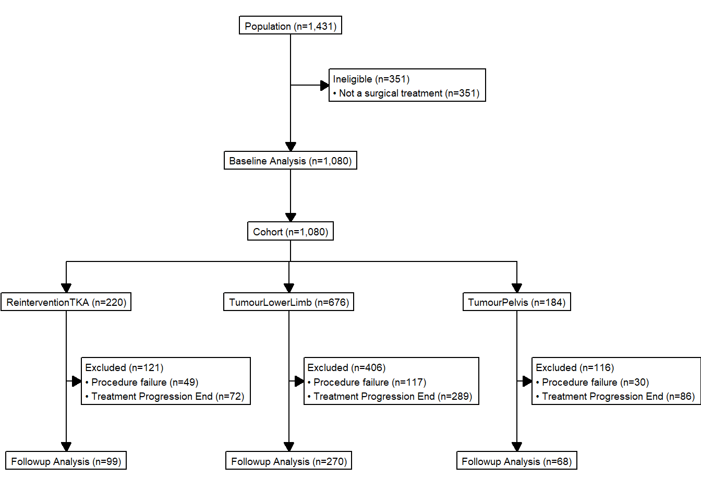
COMPRESSOR_Governance
1 Preamble
The following analysis is a report on the activity, quality and data contained in the COMPRESSOR registry, which is described in the registry wiki.
Analysis packages were loaded initially into the R environment.
Access to the COMPRESSOR datasets was pre-authorised.
A function was generated to retrieve files using the googledrive package, to call on later in the analysis for processing data imports.
Data was retrieved from live database tables. Source files were specified and stored as global variables to call on in further functions.
A static registry snapshot was retrieved and formatted based on the fixed date of preparation of the snapshot (10-Mar-2026).
2 Context
COMPRESSOR (Complex Reconstructive Surgery Outcomes Registry) is a clinical quality registry supporting the practices of one surgeon in Sydney, New South Wales. It has been in operation over two distinct periods, with upper and lower limb tumour cohorts, as well as tumour of the pelvis and reintervention arthroplasty cohorts of the hip and knee. The periods that the registry has been actively collecting PROMs;
25-Feb-2022 to 29-Sep-2022
27-Mar-2025 to present
It should be noted that collection of PROMs has been heavily restricted for this registry due to concerns over appropriateness to follow up patients at high-risk of mortality or other contraindications for completing scores. These restrictions have only recently been lifted, and only then for cases receiving hardware components of interest (Ossis, Stryker GMRS-MRH).
3 Recruitment Flow by Region
Flowcharts as per STROBE (Vandenbroucke et al. 2007) and RECORD (Benchimol et al. 2015) guidelines were generated for treatments enrolled into the Registry. Followup was set to eligibility at any postoperative timepoint.
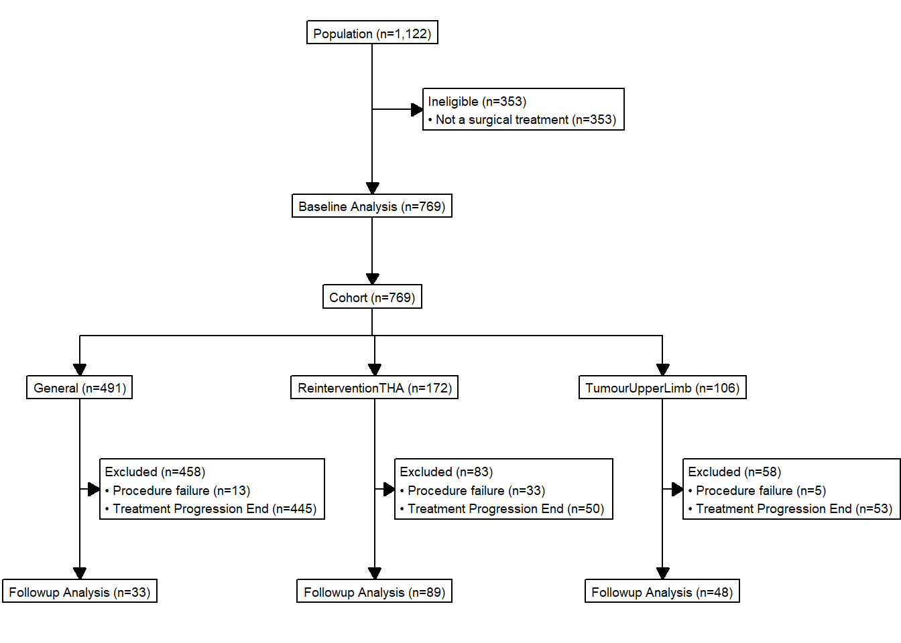
The flowcharts were separated into two components (Figure 1 and Figure 2) and exclusions noted for patients that were labelled as a procedure failure.
Note
A procedure failure is defined by a terminology in the clinical letter and/or a revision case booked that affects the previously operated joint region. The general definition for arthroplasty cases as per the NJRR was used, whereby removal of any significant component of the existing prosthesis with replacement was deemed a failure of the preceding arthroplasty. In the case of infections treated with long-term antibiotics, where the preceding surgical procedure was intended to treat an existing infection, these cases were failed. In cases where DAIR with antibiotic therapy was used for non-septic revisions or primary cases in which an infection has been detected, these have been noted as complications without failing the preceding treatment.
Note
Treatment progression end is a term to denote that a treatment record is no longer being actively tracked by the registry team with respect to clinical outcomes or patient-reported outcomes. In this registry, the majority of cases are deceased, or are not contactable by the registry. A smaller number are stage 1 revisions that have transition to stage 2.
Cumulative recruitment over time was plotted from Registry inception to the present.

The non-linear recruitment progression illustrated in Figure 3 denotes the distinct periods of operation of COMPRESSOR, combined with periods of retrospective chart review of key patient subgroups. The recent increase in recruitment has been facilitated by some reorganisation of the cohort structure of the registry. This has had the side effect of increasing the PROMs eligible pool at the relevant time points.
4 Missingness and Compliance
4.1 Baseline
The COMPRESSOR registry has a patchy history of baseline capture for relevant cohorts. A large proportion of those eligible for baseline capture have been due to their enrolment during the “active” periods of the registry, but not necessarily when the PROMs component of the registry has been active. This has created challenges in determining the eligibility of records for baseline capture.

Missingness for baseline PROMs (represented by VR12, common to all cohorts) is captured in Figure 4. Overall, the eligible pool remains small for many cohorts for baseline capture and response rates vary between cohorts.
4.2 Patient-reported Outcomes by TimePoint
As the registry has been running for a relatively short period of time, the followup PROMs capture is best described as cross-sectional rather than longitudinal, in that there are few treatment records eligible for multiple timepoints in the follow up schedule.

The VR12 is the first score presented to patients at each timepoint, but is not presented at every timepoint for every cohort. The variable capture between timepoints illustrated in Figure 5 may reflect a number of underlying factors (cohort differences in engagement, mode of communication, whether it is the first attempt at followup).
Note
Eligibility for PROMs capture had to be calculated by determining the date on which the record was created, the date windows for each follow-up time-point and comparing these to the active periods of the registry operation. The eligible pool of treatments varies depending on how the active periods of PROMs collection line up with the follow-up schedule windows.
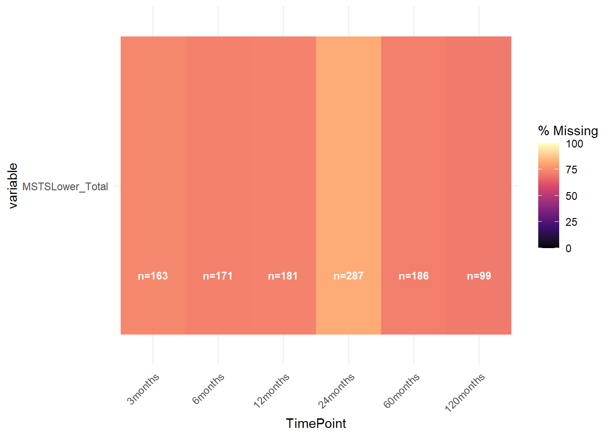
The MSTS (Figure 6) is presented to TumourPelvis, TumourLowerLimb and ReinterventionTKA cohorts at every followup timepoint. The medium to long-term timepoints present ongoing challenges for re-establishing patient contact by email, with only some cases appearing on the GMRS followup list (N ~ 30 each for the 60months and 120months windows - see below).
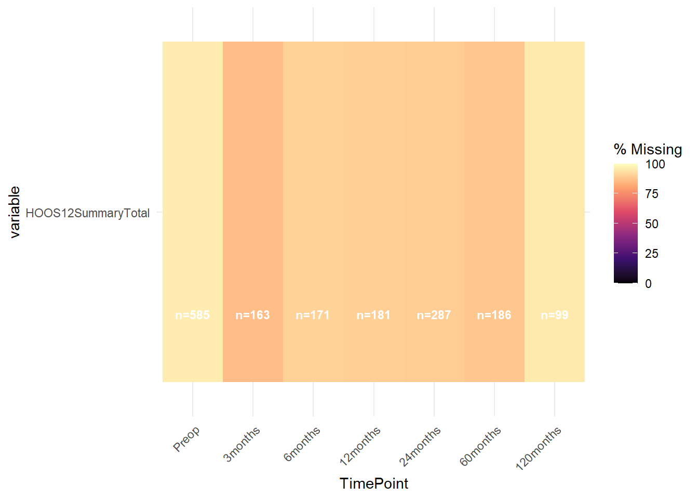
The HOOS12 (Figure 7) is presented only to the ReinterventionTHA cohort at all of the registry timepoints. The reduced capture preoperatively may be due to a number of underlying factors which are not yet clear. It may be that the cohort selection within the system has been too slow to capture patients prior to surgery or that patients are dropping out before filling in the HOOS (questionnaire fatigue) within the questionnaire pack.
5 Cohort Analysis
The VR12 is a general health questionnaire that is presented to all patients enrolled in the registry. It comprises two components to the score, Physical and Mental.
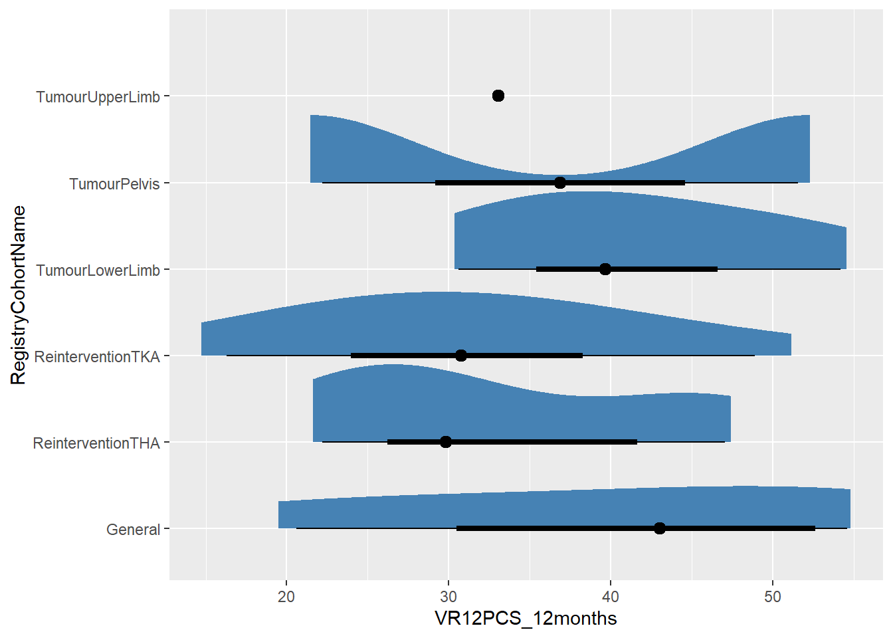
Between-cohort variability is observed for the Physical Component Score of the VR12 (Figure 8). Most notable is the high variation within all cohorts. Interestingly, the TumourPelvis cohort presents in a bimodal distribution, with some patients with good physical function while others are quite low.

Athough the capture for MSTS remains sparse and largely cross-sectional, a pattern of linear decrease in the median MSTS score can be observed for the TumourLowerLimb cohort in Figure 9. The improved median score at the 10 year follow-up may reflect the impact of survivor bias on the PROMs results in this cohort.
Note
Survivor bias is the systematic alteration of outcome measures due to the relationship between the measure and the status of the patient at followup, mediated by the length of followup. The longer the followup, the less likely that low functioning patients have survived long enough for the registry to seek PROMs from them.
5.1 Tumour Pelvis
The tumour pelvis cohort included in this report include all cases presenting with abnormal growths directly interacting with the bones of the pelvis. While this contains Ossis cases, these are not the majority of cases included.
| Characteristic | Non-Surgical N = 241 |
Surgical N = 1001 |
|---|---|---|
| TreatmentType | ||
| Primary | 24 (100%) | 85 (85%) |
| Revision Else | 0 (0%) | 4 (4.0%) |
| Revision Own | 0 (0%) | 11 (11%) |
| TreatmentStatus | ||
| Archived | 1 (4.2%) | 11 (11%) |
| Failed | 0 (0%) | 14 (14%) |
| No further followup | 3 (13%) | 24 (24%) |
| Ongoing | 20 (83%) | 50 (50%) |
| Pending: Treatment | 0 (0%) | 1 (1.0%) |
| DateInitialExamination | 2017-02-03 - 2025-05-22 | 2009-02-20 - 2025-12-22 |
| AgeAtInitialExam | 54 (37, 62) | 57 (35, 68) |
| AgeAtTreatment | 54 (38, 62) | 55 (35, 67) |
| Sex2 | ||
| Female | 13 (54%) | 51 (51%) |
| Male | 11 (46%) | 49 (49%) |
| Retrospective | 20 (83%) | 60 (60%) |
| Planned | 0 (0%) | 4 (5.4%) |
| Hardware | ||
| gmrs | 0 (NA%) | 10 (24%) |
| ossis | 0 (NA%) | 32 (76%) |
| 1 n (%); Min - Max; Median (Q1, Q3) | ||
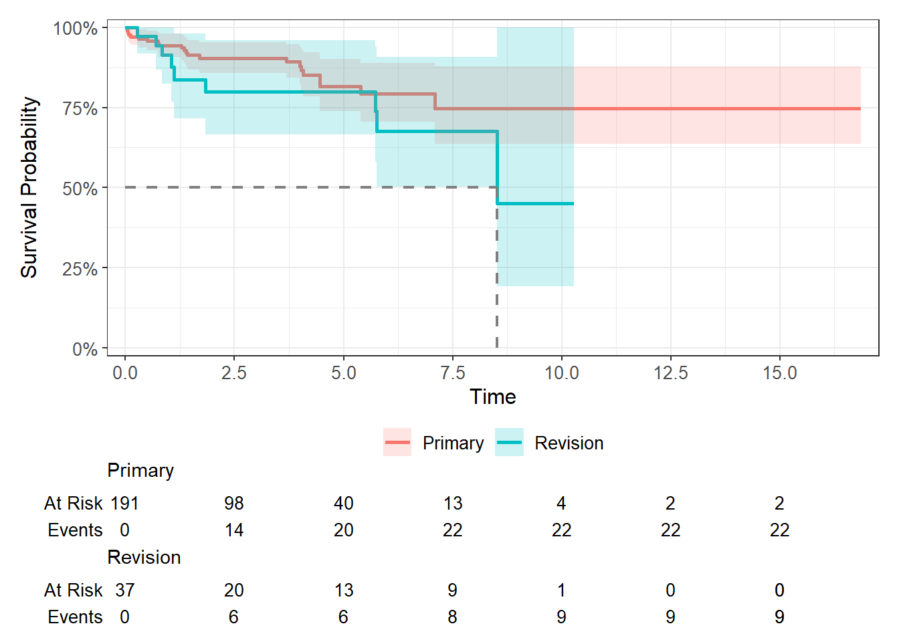
| Characteristic | 1 Years | 2 Years | 5 Years | 10 Years |
|---|---|---|---|---|
| Procedure Survival | ||||
| Primary | 93% (87% - 99%) | 91% (85% - 98%) | 83% (70% - 97%) | 83% (70% - 97%) |
| Revision | 84% (66% - 100%) | 72% (49% - 100%) | 72% (49% - 100%) | 48% (20% - 100%) |
The overall survival for surgical cases in this cohort are illustrated in Figure 10 and summarised in Table 2, with median survival for revision cases occurring at ~ 6 years and primary cases achieving ~70% survival out to 10 years.
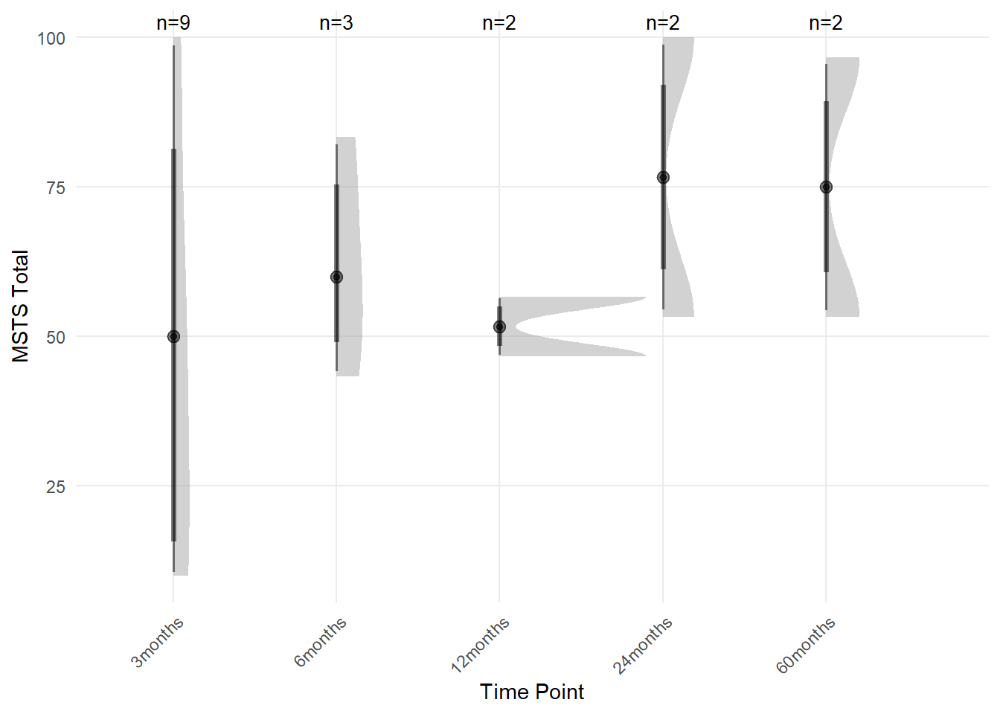
5.2 Tumour Lower Limb
The tumour lower limb cohort included in this report include all cases presenting with abnormal growths directly interacting with the bones of the lower limb that do not include the pelvis. The majority of these cases treated surgically include GMRS or MRH components.
| Characteristic | Non-Surgical N = 541 |
Surgery recommended N = 11 |
Surgical N = 4241 |
|---|---|---|---|
| TreatmentType | |||
| Primary | 49 (91%) | 1 (100%) | 383 (90%) |
| Revision | 0 (0%) | 0 (0%) | 1 (0.2%) |
| Revision Else | 4 (7.4%) | 0 (0%) | 3 (0.7%) |
| Revision Own | 1 (1.9%) | 0 (0%) | 37 (8.7%) |
| TreatmentStatus | |||
| Archived | 1 (1.9%) | 0 (0%) | 23 (5.4%) |
| Failed | 1 (1.9%) | 0 (0%) | 57 (13%) |
| No further followup | 7 (13%) | 0 (0%) | 161 (38%) |
| Ongoing | 45 (83%) | 1 (100%) | 179 (42%) |
| Pending: Treatment | 0 (0%) | 0 (0%) | 4 (0.9%) |
| DateInitialExamination | 2015-11-02 - 2025-05-19 | 2023-02-01 - 2023-02-01 | 2004-12-22 - 2026-02-26 |
| AgeAtInitialExam | 52 (38, 57) | 74 (74, 74) | 50 (32, 64) |
| Sex2 | |||
| Female | 34 (63%) | 1 (100%) | 197 (46%) |
| Male | 20 (37%) | 0 (0%) | 227 (54%) |
| Retrospective | 46 (85%) | 0 (0%) | 305 (72%) |
| Hardware | |||
| gmrs | 1 (100%) | 0 (NA%) | 222 (96%) |
| mrh | 0 (0%) | 0 (NA%) | 9 (3.9%) |
| ossis | 0 (0%) | 0 (NA%) | 1 (0.4%) |
| 1 n (%); Min - Max; Median (Q1, Q3) | |||
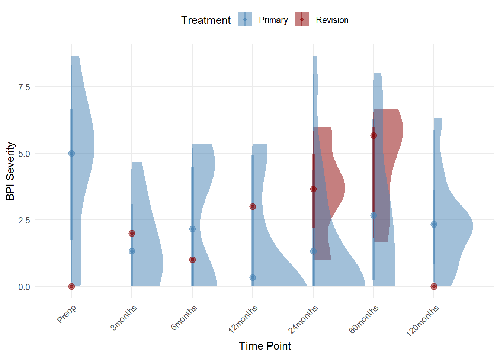
The severity of pain captured in the BPI short form remains difficult to compare between primary vs revision cases (Figure 12) due to low sample sizes, but overall primary cases report relatively low pain up to 10 years postoperatively.
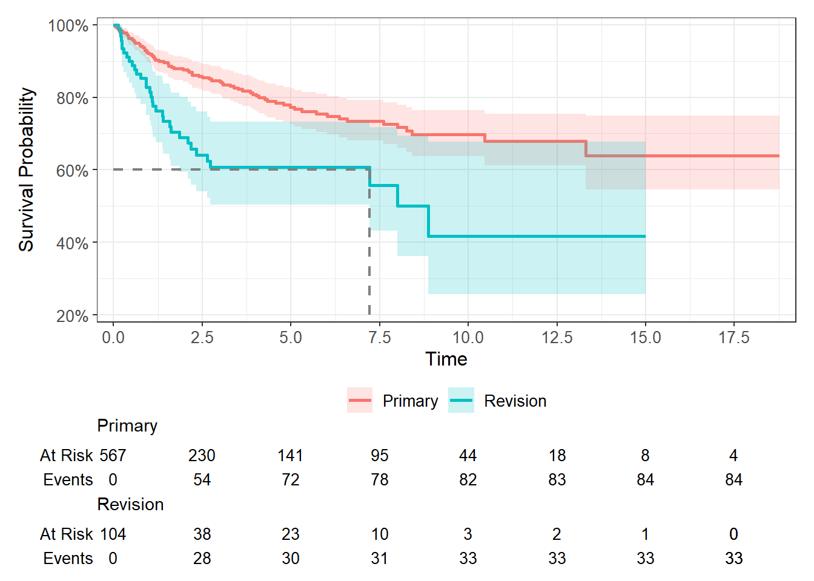
| Characteristic | 1 Years | 2 Years | 5 Years | 10 Years |
|---|---|---|---|---|
| Procedure Survival | ||||
| Primary | 94% (91% - 97%) | 89% (85% - 93%) | 80% (74% - 86%) | 72% (65% - 81%) |
| Revision | 87% (76% - 100%) | 79% (64% - 96%) | 65% (48% - 87%) | 46% (27% - 80%) |
The overall survival for surgical cases in this cohort are illustrated in Figure 13 and summarised in Table 4 , with 60% survival for revision cases occurring at ~ 2.5 years, while for primary cases this occurred ~ 13 years.
5.3 GMRS-MRH
The surgical cases containing Stryker components are tagged in an additional field. For the purposes of this report, the label Hardware contains the first instance in the text field of GMRS or MRH. There are a number of cases where both components have been used that is not reflected in the data below (see specific sponsor reports).
| Characteristic | Overall N = 2591 |
General N = 131 |
ReinterventionTHA N = 211 |
ReinterventionTKA N = 611 |
TumourLowerLimb N = 1581 |
TumourPelvis N = 61 |
|---|---|---|---|---|---|---|
| TreatmentType | ||||||
| Primary | 167 (65%) | 12 (100%) | 5 (24%) | 4 (6.6%) | 142 (90%) | 4 (67%) |
| Revision | 1 (0.4%) | 0 (0%) | 1 (4.8%) | 0 (0%) | 0 (0%) | 0 (0%) |
| Revision Else | 58 (22%) | 0 (0%) | 14 (67%) | 42 (69%) | 1 (0.6%) | 1 (17%) |
| Revision Own | 32 (12%) | 0 (0%) | 1 (4.8%) | 15 (25%) | 15 (9.5%) | 1 (17%) |
| SurgicalTreatment2 | ||||||
| Non-Surgical | 2 (0.8%) | 0 (0%) | 0 (0%) | 1 (1.6%) | 1 (0.6%) | 0 (0%) |
| Surgical | 257 (99%) | 13 (100%) | 21 (100%) | 60 (98%) | 157 (99%) | 6 (100%) |
| TreatmentStatus | ||||||
| Archived | 2 (0.8%) | 1 (7.7%) | 0 (0%) | 0 (0%) | 1 (0.6%) | 0 (0%) |
| Failed | 48 (19%) | 0 (0%) | 5 (24%) | 14 (23%) | 28 (18%) | 1 (17%) |
| No further followup | 81 (31%) | 2 (15%) | 5 (24%) | 12 (20%) | 59 (37%) | 3 (50%) |
| Ongoing | 127 (49%) | 10 (77%) | 11 (52%) | 35 (57%) | 69 (44%) | 2 (33%) |
| Pending: Treatment | 1 (0.4%) | 0 (0%) | 0 (0%) | 0 (0%) | 1 (0.6%) | 0 (0%) |
| DateInitialExamination | 2008-12-03 - 2026-02-16 | 2011-08-31 - 2025-04-09 | 2011-12-05 - 2026-02-16 | 2009-11-03 - 2026-01-20 | 2008-12-03 - 2025-05-15 | 2012-08-23 - 2025-05-20 |
| AgeAtInitialExam | 60 (47, 70) | 57 (42, 76) | 60 (51, 70) | 68 (64, 77) | 53 (41, 64) | 65 (44, 75) |
| Sex2 | ||||||
| Female | 127 (49%) | 9 (69%) | 16 (76%) | 26 (43%) | 73 (46%) | 3 (50%) |
| Male | 132 (51%) | 4 (31%) | 5 (24%) | 35 (57%) | 85 (54%) | 3 (50%) |
| Hardware | ||||||
| gmrs | 228 (88%) | 7 (54%) | 21 (100%) | 44 (72%) | 150 (95%) | 6 (100%) |
| mrh | 31 (12%) | 6 (46%) | 0 (0%) | 17 (28%) | 8 (5.1%) | 0 (0%) |
| Retrospective | 219 (85%) | 12 (92%) | 13 (62%) | 42 (69%) | 147 (93%) | 5 (83%) |
| 1 n (%); Min - Max; Median (Q1, Q3) | ||||||
The General cohort included in Table 5 include complex primary arthroplasties for deformity concomitant with osteoarthritis of the knee that have received the components of interest.
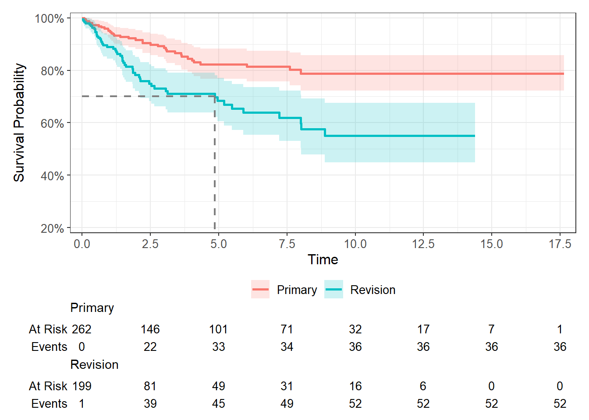
| Characteristic | 1 Years | 2 Years | 5 Years | 10 Years |
|---|---|---|---|---|
| Procedure Survival | ||||
| Primary | 96% (93% - 99%) | 92% (87% - 97%) | 81% (73% - 88%) | 77% (69% - 86%) |
| Revision | 91% (85% - 98%) | 84% (76% - 93%) | 71% (60% - 85%) | 52% (38% - 71%) |
The overall survival for surgical cases in this cohort are illustrated in Figure 14 and summarised in Table 6 , with 70% survival for revision cases occurring at ~ 5 years, while for primary cases this occurred ~ 10 years.
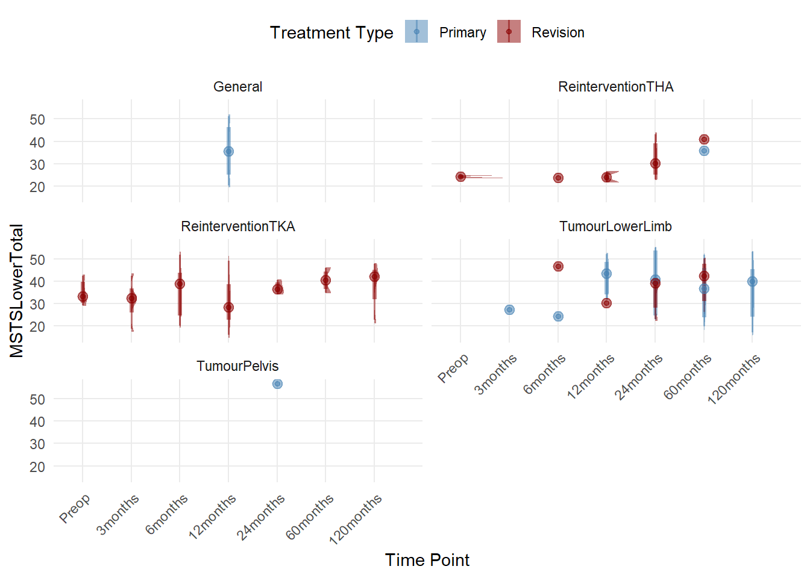
The VR12 Physical component data (Figure 15) remain difficult to interpret due to the low sample sizes and cross sectional nature of the data. Initial observations identify relative stability across timepoints for ReinterventionTKA, while TumourLowerLimb displays a more complex pattern of recovery from 6 months onwards.
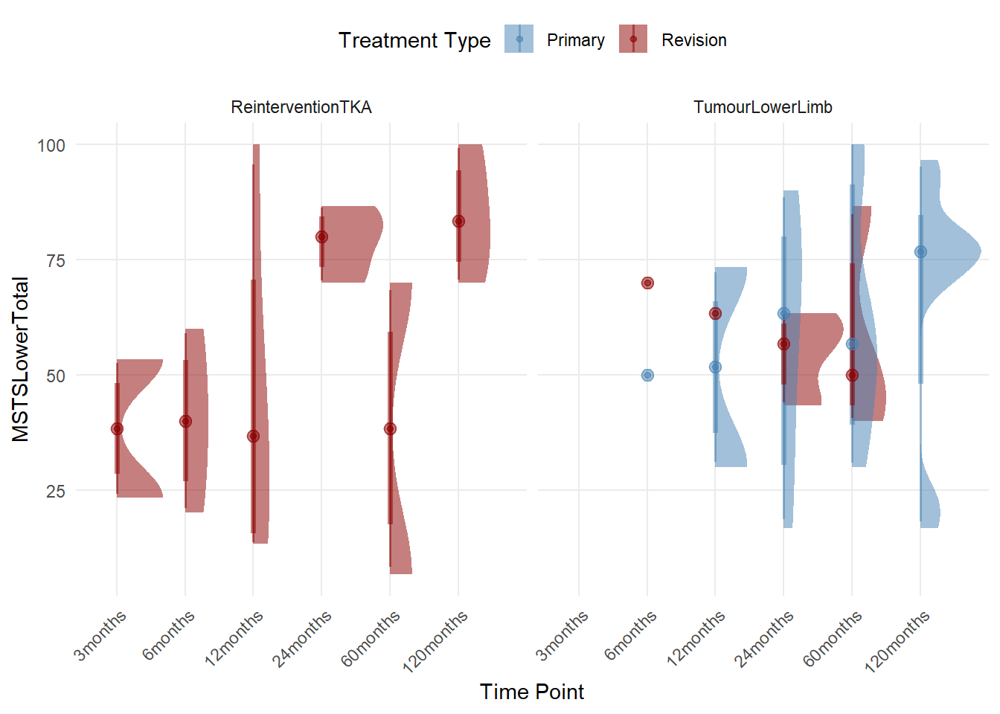
Similarly, the cross-sectional nature of the MSTS data for this subgroup may be misleading (Figure 16), however differences are notable within the TumourLowerLimb cohort between primary and revision cases.
5.3.1 PROMs Capture
Target numbers retrieved from Synopsis
Complex primary TKA: 67 cases
Revision TKA: 79 cases
Distal femoral reconstruction: 53 cases
Proximal tibial reconstruction: 55 cases
Proximal femoral reconstruction: 78 cases
Total femoral replacement: As available
Femoral diaphyseal defect reconstruction: As available
| Summary of PROMs Eligibility by Timepoint for GMRS | MRH cases | |||||||
|---|---|---|---|---|---|---|---|
| ComplexPrimaryTKA | DistalFemur | ProximalFemur | TotalFemur | RevisionTKA | ProximalTibia | Intercalary | |
| Preop | 2 | 2 | 5 | 1 | 3 | 0 | 0 |
| 3months | 2 | 6 | 2 | 1 | 10 | 1 | 0 |
| 6months | 2 | 7 | 2 | 0 | 11 | 2 | 0 |
| 12months | 0 | 4 | 2 | 2 | 3 | 2 | 0 |
| 24months | 1 | 5 | 10 | 1 | 3 | 6 | 0 |
| 60months | 0 | 8 | 10 | 0 | 1 | 6 | 0 |
| 120months | 0 | 4 | 4 | 1 | 2 | 1 | 0 |
| N Cases (Total) | 18 | 85 | 84 | 9 | 60 | 48 | 1 |
| N Cases (Active) | 11 | 37 | 29 | 6 | 30 | 18 | NA |
| Summary of Returned PROMs by Timepoint for GMRS | MRH cases | |||||||
|---|---|---|---|---|---|---|---|
| ComplexPrimaryTKA | DistalFemur | ProximalFemur | TotalFemur | RevisionTKA | ProximalTibia | Intercalary | |
| Preop | 0 (0%) | 0 (0%) | 1 (20%) | 1 (100%) | 1 (33.3%) | 0 (NaN%) | 0 (NaN%) |
| 3months | 1 (50%) | 2 (33.3%) | 0 (0%) | 0 (0%) | 5 (50%) | 0 (0%) | 0 (NaN%) |
| 6months | 0 (0%) | 3 (42.9%) | 1 (50%) | 0 (NaN%) | 8 (72.7%) | 1 (50%) | 0 (NaN%) |
| 12months | 0 (NaN%) | 3 (75%) | 0 (0%) | 1 (50%) | 2 (66.7%) | 1 (50%) | 0 (NaN%) |
| 24months | 0 (0%) | 1 (20%) | 2 (20%) | 0 (0%) | 0 (0%) | 1 (16.7%) | 0 (NaN%) |
| 60months | 0 (NaN%) | 0 (0%) | 1 (10%) | 0 (NaN%) | 0 (0%) | 0 (0%) | 0 (NaN%) |
| 120months | 0 (NaN%) | 2 (50%) | 2 (50%) | 0 (0%) | 0 (0%) | 1 (100%) | 0 (NaN%) |
| Characteristic | Overall N = 2,1351 |
ComplexPrimaryTKA N = 1261 |
DistalFemur N = 5951 |
Intercalary N = 71 |
ProximalFemur N = 5881 |
ProximalTibia N = 3361 |
RevisionTKA N = 4201 |
TotalFemur N = 631 |
|---|---|---|---|---|---|---|---|---|
| TreatmentActivity | ||||||||
| Active | 917 (43%) | 77 (61%) | 259 (44%) | 0 (0%) | 203 (35%) | 126 (38%) | 210 (50%) | 42 (67%) |
| Inactive | 1,218 (57%) | 49 (39%) | 336 (56%) | 7 (100%) | 385 (65%) | 210 (63%) | 210 (50%) | 21 (33%) |
| RegistryCohortName | ||||||||
| General | 98 (4.6%) | 70 (56%) | 28 (4.7%) | 0 (0%) | 0 (0%) | 0 (0%) | 0 (0%) | 0 (0%) |
| ReinterventionTHA | 126 (5.9%) | 0 (0%) | 0 (0%) | 0 (0%) | 112 (19%) | 0 (0%) | 0 (0%) | 14 (22%) |
| ReinterventionTKA | 749 (35%) | 7 (5.6%) | 182 (31%) | 0 (0%) | 7 (1.2%) | 105 (31%) | 420 (100%) | 28 (44%) |
| TumourLowerLimb | 1,120 (52%) | 49 (39%) | 385 (65%) | 7 (100%) | 427 (73%) | 231 (69%) | 0 (0%) | 21 (33%) |
| TumourPelvis | 42 (2.0%) | 0 (0%) | 0 (0%) | 0 (0%) | 42 (7.1%) | 0 (0%) | 0 (0%) | 0 (0%) |
| TimePoint | ||||||||
| Preop | 305 (14%) | 18 (14%) | 85 (14%) | 1 (14%) | 84 (14%) | 48 (14%) | 60 (14%) | 9 (14%) |
| 3months | 305 (14%) | 18 (14%) | 85 (14%) | 1 (14%) | 84 (14%) | 48 (14%) | 60 (14%) | 9 (14%) |
| 6months | 305 (14%) | 18 (14%) | 85 (14%) | 1 (14%) | 84 (14%) | 48 (14%) | 60 (14%) | 9 (14%) |
| 12months | 305 (14%) | 18 (14%) | 85 (14%) | 1 (14%) | 84 (14%) | 48 (14%) | 60 (14%) | 9 (14%) |
| 24months | 305 (14%) | 18 (14%) | 85 (14%) | 1 (14%) | 84 (14%) | 48 (14%) | 60 (14%) | 9 (14%) |
| 60months | 305 (14%) | 18 (14%) | 85 (14%) | 1 (14%) | 84 (14%) | 48 (14%) | 60 (14%) | 9 (14%) |
| 120months | 305 (14%) | 18 (14%) | 85 (14%) | 1 (14%) | 84 (14%) | 48 (14%) | 60 (14%) | 9 (14%) |
| Eligibility | 135 (6.3%) | 7 (5.6%) | 36 (6.1%) | 0 (0%) | 35 (6.0%) | 18 (5.4%) | 33 (7.9%) | 6 (9.5%) |
| MSTS Captured | 34 (1.6%) | 1 (0.8%) | 10 (1.7%) | 0 (0%) | 4 (0.7%) | 4 (1.2%) | 14 (3.3%) | 1 (1.6%) |
| HOOS12 Captured | 3 (0.1%) | 0 (0%) | 0 (0%) | 0 (0%) | 3 (0.5%) | 0 (0%) | 0 (0%) | 0 (0%) |
| KOOS12 Captured | 26 (1.2%) | 0 (0%) | 6 (1.0%) | 0 (0%) | 0 (0%) | 2 (0.6%) | 16 (3.8%) | 2 (3.2%) |
| 1 n (%) | ||||||||
| Characteristic | Preop1 | 3months1 | 6months1 | 12months1 | 24months1 | 60months1 | 120months1 |
|---|---|---|---|---|---|---|---|
| ComplexPrimaryTKA | |||||||
| MSTS Captured | 0 (0%) | 1 (5.6%) | 0 (0%) | 0 (0%) | 0 (0%) | 0 (0%) | 0 (0%) |
| HOOS12 Captured | 0 (0%) | 0 (0%) | 0 (0%) | 0 (0%) | 0 (0%) | 0 (0%) | 0 (0%) |
| KOOS12 Captured | 0 (0%) | 0 (0%) | 0 (0%) | 0 (0%) | 0 (0%) | 0 (0%) | 0 (0%) |
| DistalFemur | |||||||
| MSTS Captured | 0 (0%) | 2 (2.4%) | 2 (2.4%) | 3 (3.5%) | 1 (1.2%) | 0 (0%) | 2 (2.4%) |
| HOOS12 Captured | 0 (0%) | 0 (0%) | 0 (0%) | 0 (0%) | 0 (0%) | 0 (0%) | 0 (0%) |
| KOOS12 Captured | 0 (0%) | 2 (2.4%) | 3 (3.5%) | 1 (1.2%) | 0 (0%) | 0 (0%) | 0 (0%) |
| ProximalFemur | |||||||
| MSTS Captured | 0 (0%) | 0 (0%) | 0 (0%) | 0 (0%) | 2 (2.4%) | 1 (1.2%) | 1 (1.2%) |
| HOOS12 Captured | 1 (1.2%) | 0 (0%) | 1 (1.2%) | 0 (0%) | 0 (0%) | 0 (0%) | 1 (1.2%) |
| KOOS12 Captured | 0 (0%) | 0 (0%) | 0 (0%) | 0 (0%) | 0 (0%) | 0 (0%) | 0 (0%) |
| TotalFemur | |||||||
| MSTS Captured | 0 (0%) | 0 (0%) | 0 (0%) | 1 (11%) | 0 (0%) | 0 (0%) | 0 (0%) |
| HOOS12 Captured | 0 (0%) | 0 (0%) | 0 (0%) | 0 (0%) | 0 (0%) | 0 (0%) | 0 (0%) |
| KOOS12 Captured | 1 (11%) | 0 (0%) | 0 (0%) | 1 (11%) | 0 (0%) | 0 (0%) | 0 (0%) |
| RevisionTKA | |||||||
| MSTS Captured | 0 (0%) | 5 (8.3%) | 7 (12%) | 2 (3.3%) | 0 (0%) | 0 (0%) | 0 (0%) |
| HOOS12 Captured | 0 (0%) | 0 (0%) | 0 (0%) | 0 (0%) | 0 (0%) | 0 (0%) | 0 (0%) |
| KOOS12 Captured | 1 (1.7%) | 5 (8.3%) | 8 (13%) | 2 (3.3%) | 0 (0%) | 0 (0%) | 0 (0%) |
| ProximalTibia | |||||||
| MSTS Captured | 0 (0%) | 0 (0%) | 1 (2.1%) | 1 (2.1%) | 1 (2.1%) | 0 (0%) | 1 (2.1%) |
| HOOS12 Captured | 0 (0%) | 0 (0%) | 0 (0%) | 0 (0%) | 0 (0%) | 0 (0%) | 0 (0%) |
| KOOS12 Captured | 0 (0%) | 0 (0%) | 1 (2.1%) | 1 (2.1%) | 0 (0%) | 0 (0%) | 0 (0%) |
| Intercalary | |||||||
| MSTS Captured | 0 (0%) | 0 (0%) | 0 (0%) | 0 (0%) | 0 (0%) | 0 (0%) | 0 (0%) |
| HOOS12 Captured | 0 (0%) | 0 (0%) | 0 (0%) | 0 (0%) | 0 (0%) | 0 (0%) | 0 (0%) |
| KOOS12 Captured | 0 (0%) | 0 (0%) | 0 (0%) | 0 (0%) | 0 (0%) | 0 (0%) | 0 (0%) |
| 1 n (%) | |||||||
5.3.2 PROMs Export
Needs to be exported in the following column format;
PatientID
TreatmentID
RegistryCohortName
PROMSelect
Eligible2year
Eligible5year
Eligible10year
Score 2|5|10yr
MortalityStatus
ProductNum1|2|3|4
TreatmentType (PrimaryRevision)
GMRSUsage (ProxFemur, ProxTib, etc)
PivotLonger SnapshotGMRSPROM (collapse questionnaire columns into multiple rows) and then PivotWider (Splitout timepoint column rows into multiple columns for the same score row)
Add product information
The matching on date is not perfect - need to supplement with a fuzzy match
5.4 3DPI
The surgical cases containing Ossis components are tagged in an additional field. For the purposes of this report, the label Hardware contains the first instance in the text field of GMRS or MRH. There are a number of cases where both components have been used that is not reflected in the data below (see specific sponsor reports).
| Characteristic | Overall N = 551 |
ReinterventionTHA N = 181 |
ReinterventionTKA N = 11 |
TumourLowerLimb N = 11 |
TumourPelvis N = 351 |
|---|---|---|---|---|---|
| TreatmentType | |||||
| Primary | 29 (53%) | 0 (0%) | 1 (100%) | 1 (100%) | 27 (77%) |
| Revision Else | 12 (22%) | 10 (56%) | 0 (0%) | 0 (0%) | 2 (5.7%) |
| Revision Own | 14 (25%) | 8 (44%) | 0 (0%) | 0 (0%) | 6 (17%) |
| SurgicalTreatment2 | |||||
| Surgical | 55 (100%) | 18 (100%) | 1 (100%) | 1 (100%) | 35 (100%) |
| TreatmentStatus | |||||
| Archived | 4 (7.3%) | 1 (5.6%) | 0 (0%) | 0 (0%) | 3 (8.6%) |
| Failed | 5 (9.1%) | 0 (0%) | 0 (0%) | 0 (0%) | 5 (14%) |
| No further followup | 8 (15%) | 1 (5.6%) | 0 (0%) | 0 (0%) | 7 (20%) |
| Ongoing | 37 (67%) | 16 (89%) | 0 (0%) | 1 (100%) | 20 (57%) |
| Pending: Treatment | 1 (1.8%) | 0 (0%) | 1 (100%) | 0 (0%) | 0 (0%) |
| DateInitialExamination | 2017-02-20 - 2026-03-03 | 2017-05-22 - 2025-12-03 | 2026-03-03 - 2026-03-03 | 2020-11-24 - 2020-11-24 | 2017-02-20 - 2025-04-10 |
| AgeAtInitialExam | 61 (42, 71) | 69 (64, 73) | 70 (70, 70) | 22 (22, 22) | 44 (33, 68) |
| Sex2 | |||||
| Female | 27 (49%) | 11 (61%) | 0 (0%) | 1 (100%) | 15 (43%) |
| Male | 28 (51%) | 7 (39%) | 1 (100%) | 0 (0%) | 20 (57%) |
| Retrospective | 38 (69%) | 14 (78%) | 0 (0%) | 0 (0%) | 24 (69%) |
| 1 n (%); Min - Max; Median (Q1, Q3) | |||||
6 Observations | Interpretation
PROMs feedback remains relatively sparse and should be interpreted with some caution
- The nature of some patients undergoing multiple sequential treatments within the registry complicates both PROMs capture for these cases, as well as data preparation and analysis.
The followup of cases included in the registry remains largely cross-sectional, with few instances of serial capture of recovery
- Long-term PROMs should be interpreted cautiously due to the risk of survivor bias
There are some noticeable trends with respect to pain (largely moderate at each timepoint) and physical function over time (linear decay for tumour lower limb) that point to the challenging recovery patients face after treatment
Procedure survival should be interpreted with some skepticism due to the competing risks of mortality and contralateral surgery which has not been accounted for in the kaplan-meier curves so far.
- Nevertheless there are distinct patterns of survival between primary and revision presentations for all cohorts.
7 Recommendations
Continuing efforts to retrieve PROMs information from patients
Engage with patients regarding their results using the web-based COMPRESSOR portal.
Consider capture of intraoperative data on prospective or retrospective cases
Refine diagnosis coding within cohorts
Implement strategies to improve patient engagement at later followup timepoints
Identify additional opportunities for local/state data linkage activities to supplement outcomes tracking (complications, mortality, procedure survival)
8 Preparation for upgrade
Deidentification for initial testing
Patient and complications table has already been read in
Deidentify patient data
Retrieve lastcontact
Merge tables
Do some checks
Write to CSV
References
Benchimol, Eric I., Liam Smeeth, Astrid Guttmann, Katie Harron, David Moher, Irene Petersen, Henrik T. Sørensen, Erik von Elm, and Sinéad M. Langan. 2015. “The REporting of Studies Conducted Using Observational Routinely-Collected Health Data (RECORD) Statement.” PLOS Medicine 12 (10): e1001885. https://doi.org/10.1371/journal.pmed.1001885.
Vandenbroucke, Jan P, Erik von Elm, Douglas G Altman, Peter C Gøtzsche, Cynthia D Mulrow, Stuart J Pocock, Charles Poole, James J Schlesselman, and Matthias Egger. 2007. “Strengthening the Reporting of Observational Studies in Epidemiology (STROBE): Explanation and Elaboration.” PLoS Medicine 4 (10): e297. https://doi.org/10.1371/journal.pmed.0040297.